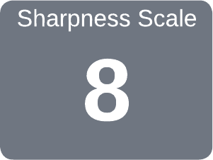

|
|
|
Rose Engine Fly Cutter, Round Rod |

Edge Angles
As with other tools, these cutters should be re-honed many times before they need to be re-ground (i.e., re-shaping them). This saves time, as well as making better use of the investment in the cutter metal.
Once the shape is established, the sharpener only needs to re-shape the cutter occasionally. Re-hone often.
|
A well-sharpened fly cutter makes an incredible surface. It also makes an incredible mess of the cuttings flying everywhere. Rich Colvin |
The cutter shown above is "V" shaped, but shows the general ideas behind the angles noted below. The cutting edge shapes shown below are the cutter when viewed from the top.
Some historical information about sharpening these is available on the Ornamental Turning Book of Knowledge.
|
General Guidelines |
||||||||||||||
|---|---|---|---|---|---|---|---|---|---|---|---|---|---|---|
|
Cutter Type |
β |
Relief |
α |
Comments |
||||||||||

V Shaped Cutter |
75° |
10°
to 20° |
30° |
This angle reaches deep into cuts. This is useful for triple finials. |

click on the gray block to see more A goniostat is quite useful for grinding these angles precisely. A relief may not be needed. If not, it will make the sharpening of this cutter much faster, and will probably help ensure it is well balanced. Key Note: Setting a nose radius of 0.007 in. (0.2 mm) is a good idea. If it is too pointy, the result on the work will look rather like a just-raked sand trap. (I've used cutters purchased from Alibaba where this was a flat, not round. They also worked quite well.) |
|||||||||
| 45° |
|
|||||||||||||
| 60° |
This is the most common grind. |
|||||||||||||
| 90° |
|
|||||||||||||
| 120° |
A wide angle (α) is typically used for an eccentric cutting frame as many designs need an obtuse angle so that the light is reflected back to the viewer. Otherwise, it simply looks like a set of thick dark lines. Something >90° is necessary. |
|||||||||||||

U Shaped Cutter |
65° | n/a | n/a |
Use the Tormek SVD-186 Gouge Jig with the square rod for holding the cutter. A relief grind can be added if needed. This is easily done when using the SVD-186 jig by adjusting the stop ring. |
||||||||||

Square Cutter |
60° | 5° | n/a |
Use the Tormek SVD-110 Tool Rest with the square rod used as a cutter holder. Key Note:. The high β angle helps support the cutting edge. |
||||||||||
The Accu-Finish machine has been used for years by machinists. These machines use diamond wheels, or a ceramic lapping wheel with a diamond spray. It is is a really great machine, especially as it has a built-in goniostat, but it can be a bit expensive.
I've found the Tormek grinder to meet my needs, though I did have to make some of my own jigs.

Square Rod as a Tool Holder
A simple square rod is the jig I've found useful for holding cutters on the Tormek.
This holder can be used with the SVD-186 or the SVD-110 platform and an alignment block.| Cutter Rod | Drill Size |
|---|---|
| 1/8” |
#30
0.1285” |
| 3/16” |
#12
0.1890” |
| 6mm |
B
0.2380” |
Dimensions for the Square Cutter Holder are also not terribly critical. I used ½” x ½” square steel rod, 2½” long for mine, and it works very well.
The end hole must be drilled for the cutter size. A slightly over-sized hole is recommended as shown in the table to the left.
I use ¼”-20 set screws with brass tips. 6M-1.0 set screws with brass tips could also be used.

SVD-186 sleeve with tool holder
An alternative is to make a holder held in the SVD-186's sleeve. The assembled set is shown in the picture to the right.
Drawings for this are in at this link.